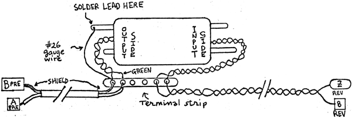

REVERB SPRING MOUNTING INSTRUCTIONS The reverb spring assembly should be mounted in an out-of-the-way place, making sure that it cannot touch the PC boards or any other wiring or hardware. It should be mounted away from the Power Supply. When using a wood cabinet where there is space , the springs can be mounted either directly underneath the REV PC board or in any one of the compartments available in the cabinet. In a chassis box, it should be placed at any free location where it cannot come in contact with a PC board. Other items of help in assembling the reverb spring assembly: 1. Hake sure to use the #26 gauge (or smaller) wire as shown. This ensures that vibrations will not be transmitted via the wire to the springs. For the same reason, the wires going from the terminal strip should be taped and/or otherwise fastened so that they cannot contact the shock-mounted spring assembly. 2. The terminal strip may be epoxied or else screwed in place. 3. It does not matter which wire (green or black) goes to what PC pad at the input side of the spring, unit. 4. It is recommended that no more than 3 feet of cable seperate the spring assembly from the PC boards. 5. Wires from the spring assembly to the PC boards are attached to the component side of the board. This is just the opposite from the way the wires from the front panel are connected.
|